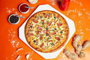

Pizza

This simple brick-oven pizza recipe has been made famous by several well-known, Brooklyn wood-fire pizzerias. Best accompanied by ice-cold, pilsner-style lager beer.
Ingredients
- Dough
- Mozarella Cheese
- Dried Oregnao
- Ground Black Pepper
- Canned Crushed Tomatoes
- Extra Virgin Olive Oil
- Fresh Basil
- Eggs
Steps
- Make the dough
- Knead the dough
- Preheat Oven and Prepare the Pizza
- Add Mozarella Cheese
- Bake in preheated oven for 4-6 minutes
- Take out and enjoy while hot!